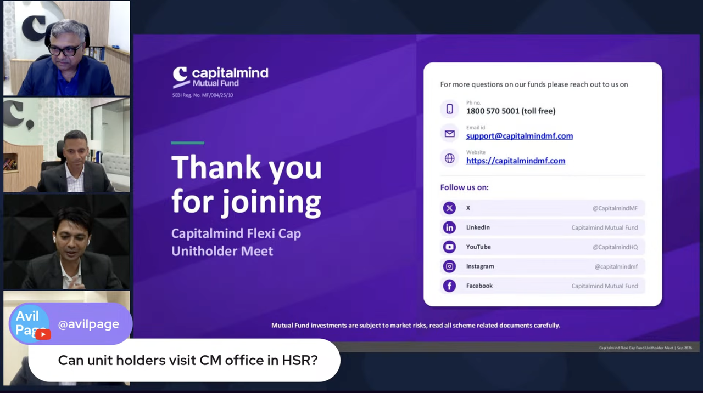
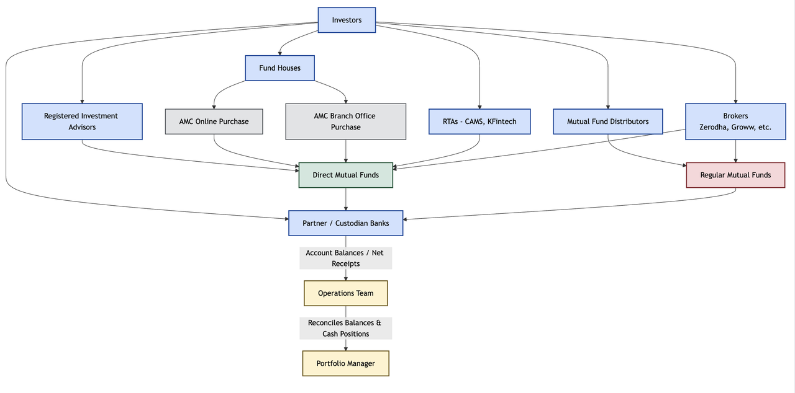
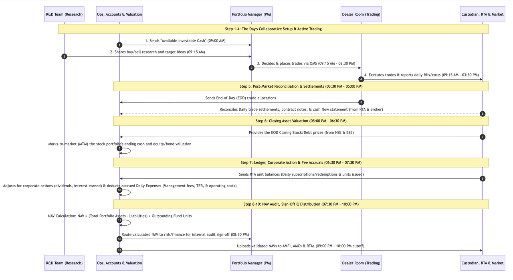

Mutual Funds Decoded - From Order to NAV
A visit to MF office
Capital Mind Mutual Fund held flexi cap unit holder meet in the last month. When I asked if I can visit their office and talk to the team they gladly agreed.

Thanks to Varun Mishra, Head of Operations, for taking time out to explain various aspects of MF process in detail.
MF Orders
There a bunch of ways investors can buy mutual funds as shown below.

On a daily basis, Ops team will monitor all these inflows in real time, aggregate the amount and let Portfolio Manager(PM) know about the available cash.
MF NAV
A 14 step sequence diagram showing interactions between R&D, Ops, PM, Dealers, Custodian & daily timelines on how MF orders gets converted to NAV.

Click here to see full size image

Why PM can't buy directly?
As an individual stock investor, we can buy/sell stocks directly from broker. But in case of mutual funds, the process is more complex.
AMCs enforce a strict separation of decision making(Portfolio Management) and trade execution(Dealing Room).
- Best execution of trades: MFs deal with large volumes of trades. Dumping a single gaint market order can move the market and result in poor execution. Dealers use algorithmic strategies to break large orders into smaller ones and execute them over time to minimize market impact.
- Execution Skill: PMs value lies in company valuation, sector allocation, and risk management. They may not have the expertise to execute trades efficiently. Dealers are trained in market microstructure, order routing, and execution strategies.
- Regulatory Compliance: SEBI regulations require AMCs to have a clear separation of duties between PMs and dealers to prevent conflicts of interest and ensure fair treatment of all investors.
Conclusion
We have seen how money flows from investors to AMCs & how it gets converted to NAV. We also learnt why PMs can't buy/sell directly and why we need dealers to execute trades.
In the next article, we will deep dive into expense ratio, how it is calculated and how it impacts investors.
Need further help with this? Feel free to send a message.